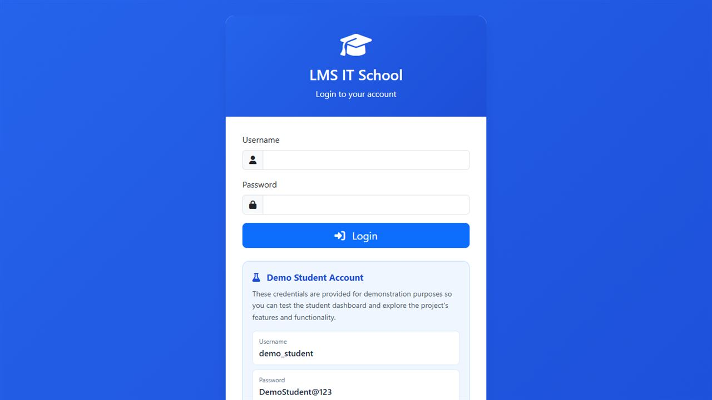

Support daily academic tasks
Students and academic teams needed a digital experience for routine learning-management tasks.
Focused workflow interface
The interface is shaped around student information and daily learning workflows.
Live web application
A live web application supporting day-to-day academic workflows.